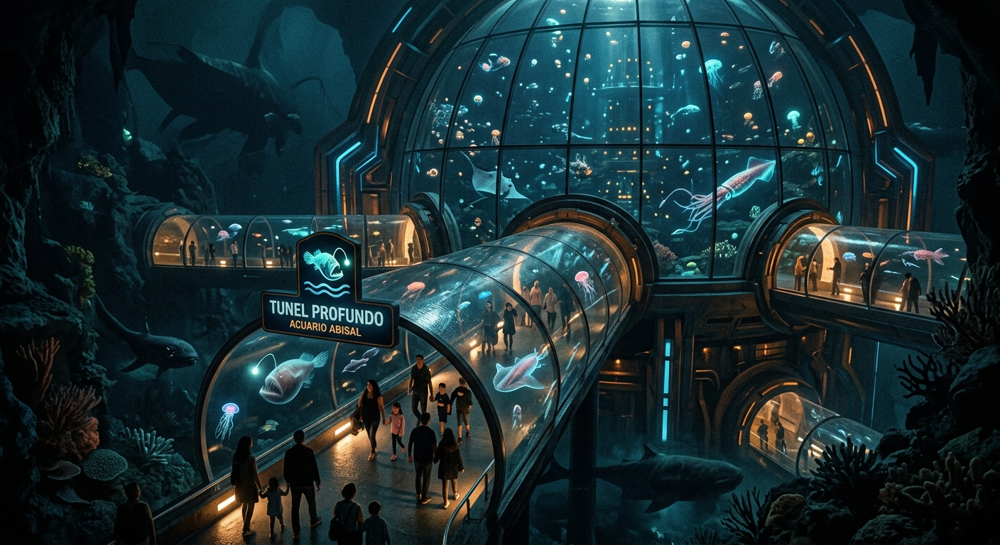

Bienvenidos a Puerto Abisal
Un punto de encuentro único entre la tecnología, la historia y la magia del océano. Descubrí todo lo que nuestra ciudad costera tiene para ofrecerte.
Conocé nuestra historiaExplorá el portal

La Ciudad
Conocé la identidad, el origen y cómo conviven la modernidad y la naturaleza en Puerto Abisal.
Ir a La Ciudad
Lugares de Interés
Explorá el Faro, el Acuario y el Distrito Coral en nuestra guía detallada de turismo.
Ver Lugares
Actividades
Enterate de los próximos eventos, los arrecifes luminosos y las actividades para toda la familia.
Ver Actividades